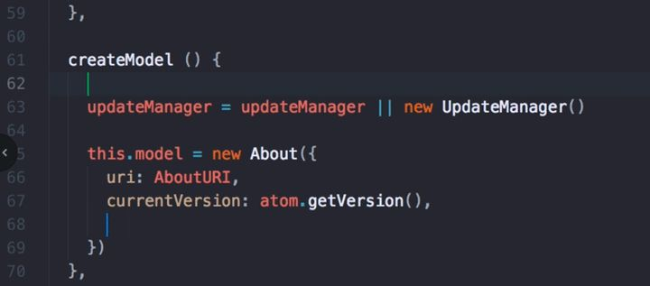
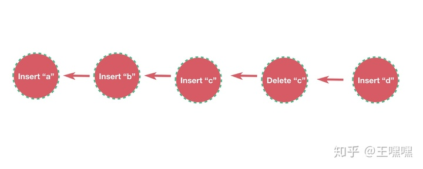
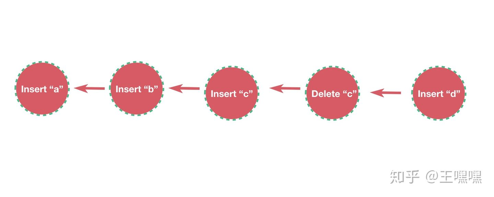
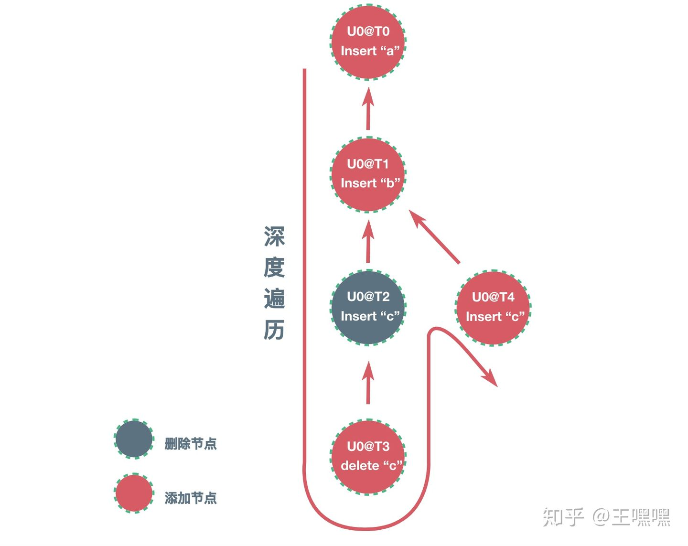
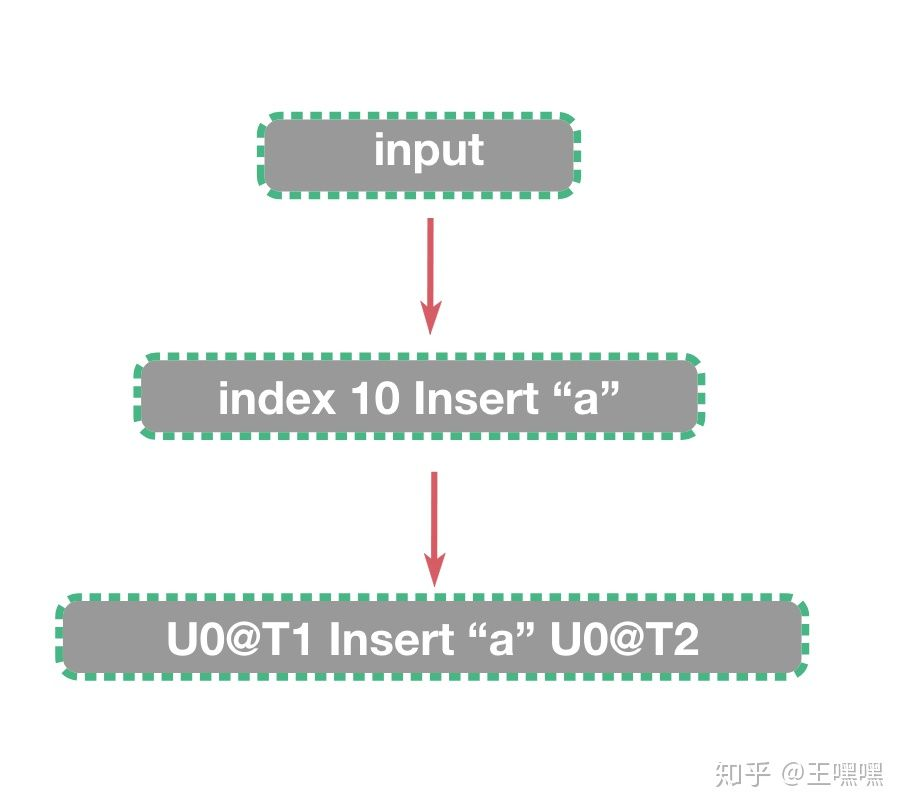
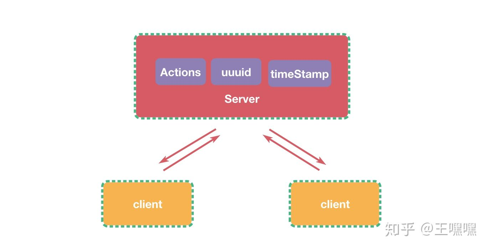
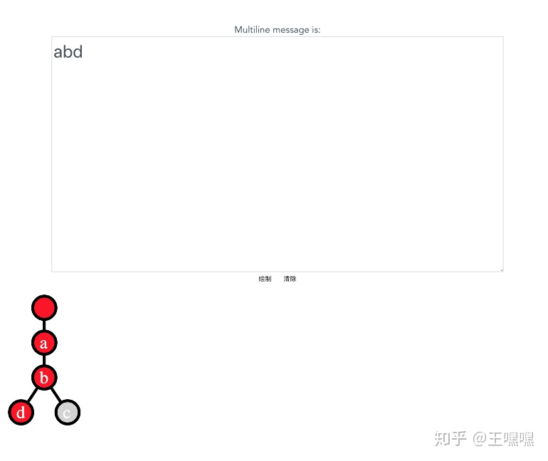

# 文本文档的协同编辑实现
# 背景
atom 编辑器新增一个 teletype 的功能，可以实现多人在线编辑代码。效果看起来挺炫酷，想了解一下是怎么实现的，于是研究了一下。

抽象一下文本文档的协同编辑这个问题，就是同步多个设备之间的操作合并，最后都能达到最终一致的结果。现在解决文本文档的协同编辑有两种方案，一种是 Google Doc 使用的 Operational transformation (OT)，还有一种就是 Atom teletype 使用的 Conflict-free replicated data type (CRDT)。
Operational transformation (OT)
Operational transformation 翻译过来就是操作转化，流程也是分为两个部分操作和转换。
Operational 操作
将设备的编辑转换成操作(Operational)，发送到服务端。
insert(index, char)
delete(index, char)
transformation 转换
装换是为了确保不同设备的操作，同步到其他设备的时候，最后会得到一致的结果。服务端接受 Operational，转换Operational，发送到对应客户端，客户端合并操作，得到一致结果。
Conflict-free replicated data type (CRDT)
CRDT 翻译过来就是无冲突可复制数据类型。
CRDT 有两种形式：
- 基于状态：即将各个节点之间的CRDT数据直接进行合并，所有节点都能最终合并到同一个状态，数据合并的顺序不会影响到最终的结果。
- 基于操作：将每一次对数据的操作通知给其他节点。只要节点知道了对数据的所有操作（收到操作的顺序可以是任意的），就能合并到同一个状态。
CRDT 必须符合可交换性，结合性，还有幂等性，所以 CRDT 数据类型合并最终会收敛到相同状态。为什么要符合可交换性，结合性，还有幂等性三个特性呢？因为可以解决分布式达到最终一致会遇到的问题：
- 网络问题导致发送接收顺序不一致（幂等性）
- 以及多次发送（可交换性）
OT 和 CRDT 区别
OT主要用于文本，CRDT 不仅仅应用在协同编辑，还有分布式系统的最终一致性上也有应用。OT操作必须通过服务器的转换才可以合并，而 CRDT 由于其数据结构特性，不通过服务器也可以合并。
# CRDT 实现协同编辑
为什么选择 CRDT，因为 OT 中的 transformation 流程太复杂，OT 概念不是很清楚，而 CRDT 很好理解，实现起来也不难。
Lamport timeStamp
在因果关系的事件需要知道事件的先后顺序，并且能够按照正确的顺序处理这些事件，所以需要 Lamport timeStamp 来确定事件发生的事件，Lamport timeStamp 只需要保证两个规则就好了。
newTimeStamp[local] = Max(timeStamp[local], timeStamp[receive])
newTimeStamp[local] = timeStamp[local] + 1
- 本地 Lamport timeStamp 为收到事件的 Lamport timeStamp 和本地 Lamport timeStamp 中最大值
- 生成事件 Lamport timeStamp 时候加一就可以了。
UUUID
每个客户端都有一个唯一 UUUID，再加上 Lamport timeStamp 就可以为每个操作添加唯一可排序的 ID。
因果树
每个操作都有唯一的 ID，接下来就是定义操作的数据结构，并且符合 CRDT 的特性，ID的唯一性可以保证操作的幂等性，操作可以排序保证了交换性，接下来只要保证每个操作都可以被合并就可以了。

id U0@T1 insert 'a' at index 0
id U0@T2 insert 'b' at index 1
id U0@T3 insert 'c' at index 2
id U0@T4 delete 'c' at index 2
id U0@T5 delete 'd' at index 2
一般会这样定义操作，但是这样的操作是线性依赖的，每个操作都是依赖前一个操作的结果，并发的时候，必须确保执行的顺序是一致的，有些操作可能合并会得到不一致的结果。

id U0@T1 insert 'a' at id null
id U0@T2 insert 'b' at id U0@T1
id U0@T3 insert 'c' at id U0@T2
id U0@T4 delete 'c' at id U0@T3
id U0@T5 insert 'd' at id U0@T2
其实每个操作的 ID，就可以作为这个字符的 ID，这样可以将每次操作的依赖定位到之前的字符，这样仅仅只依赖单个字符，而不是之前的依赖前一个操作的结果，即是并发也可以合并，其中比较特殊的操作就是删除操作，删除操作只是将字符使用墓碑标记为删除，并不真的删除，这是防止一个设备删除了字符，而其他设备依然依赖，而导致操作不可合并。这样的数据结构就是有操作依赖生成的一颗 因果树。要获取显示的字符，只要深度遍历树就可以得到。数据结构明确了以后前后端实现就很方便了。
前端实现
* 前端接受服务器生成的初始 UUUID ， Lamport timeStamp，actions，初始化前端状态。
- 前端接受用户输入，产生初始操作，比如 index 10 insert 'a'在位置10插入字母a，之后通过位置 10 深度遍历因果树，找到操作依赖字母的 id，并且生成操作 id，生成操作，然后发送到服务器。
- 前端接受服务器广播操作，更新前端 timestamp，插入因果树，生成最新字符串，更新前端状态。
服务端实现
服务端实现就比较简单了，只要提供 UUUID 还有 Lamport timeStamp 生成，还有就是接受客户端的操作，并且广播给其他客户端，因为后端使用 node 写的，还可以和前端公用一部分代码，实现就更方便。
# 结语
crdt-editgithub.com/wangdashuaihenshuai/crdt-edit
这是我自己从零实现的一个文本文档的协同编辑demo，上面是输入框，下面是数据结构的可视化。
# 参考
因果树和 CRDT 数据结构
xi编辑器 CRDT 引擎实现
atom teletype 博客
Google Doc OT wiki
OT 原理详解
文章来源：https://zhuanlan.zhihu.com/p/48229762